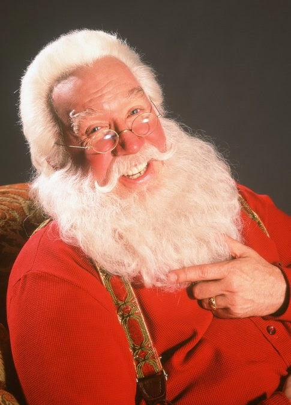
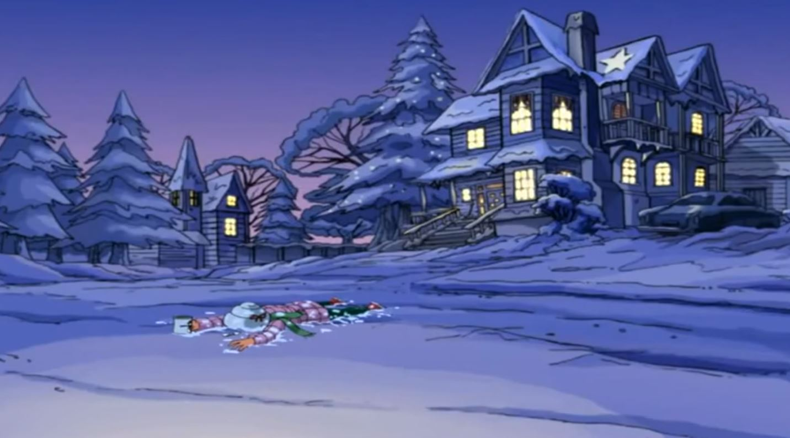

JKS Holiday Icons
Santa Claus
Santa Claus is the biggest iconic figure during Christmas time. There are a lot of movies about old Saint Nick. Like A LOT. But, the most iconic movie about Santa Claus is "The Santa Clause" with Tim Allen. One of the best movie series to watch during the holidays. Scott who is the main character and eventually ends up becoming Santa, is a divorced grumpy man who has custody of his son. On christmas eve he accidently kills a guy in a santa suit, his life begins to change once he finds out he is obligated to become Santa.

And due to this, he started going on a masacre to get rid of children 😜 🎅 🔪 🧒 Using his reindeers to run over any grandmother 👩🦳 🦌 🦌 🦌 💨 ...As he should. Santa be having a good ole time during the holidays. He has been grinding through out the whole year to have his moment. What a king 🤴 And all he gets is milk and cookies #santadeservesbetter We stan Santa and his ways, but we can't forget about his independent queen Ms. Claus. Always helping her husband and the elves. She always bake cookies... only cookies, but we stan!!!
Mr. Grinchhh

Meet Mr. Grinch! He is the main character in the iconic movie How The Grinch Stole Christmas Not eveyone loves the spirit of Christmas, especially Mr. Grnch! He is known as the grumpy, mean, no heart loving, anti-christmas hater. yeah he doesn't like anyone or anything #relatable. Throughout the movie though, Mr. Grinch says and does a lot of humorus things that makes any audience laugh. Furthermore, his character development is immaculate so in the end you gotta love him!
This is his amazing everyday schedule:
4:00, "wallow in self-pity
4:30, stare into the abyss
5:00, solve world hunger, tell no one
5:30, jazzercize
6:30, dinner with me—I can't cancel that again
7:00, wrestle with my self-loathing.... I'm booked."

At the end of the movie, Mr. Grinch learns about the values of christmas and how much joy can be brought upon from that one day. Stan Mr. Grinch!
Moral of the story: looks matter especially when you're far too displeasing to even look human (like the grinch) even though he's the best character out here yupp rocking that sweater. get up in there under that misletoeee.
We stan Mr. Grinch. I said what I said 😜 Santa too I guess, I mean they both woke up Christmas morning and choose swag, yuppp with those cookie munchies and gifts and great fashion sense that really make their eyes POP. Amazing day! :)
Cindy Lou is a character created by none other than Dr. Seuss himself. She is one of the main characters in the film How the Grinch Stole Christmas as well as other films. She is a character who is viewed as a sweet ittle girl and is one of the few people who was not afraid of the Grinch. Throughout the story, Cindy rather tried to understand the grinch. She is definitely out of the ordinary as you can see, she needs a brush for her hair. It looks like she used 7 bottles of hairspray. Extraordinary goes with extraordinary I guess. She is seen as the sweet little girl that brought eveyone together, but we all know she was just in it for the money and power over Whoville💰💅🏼, its why she hasn't gotten her nose. BUT overall she taught everyone the spirit of real Christmas so that put her on the nice list I guess